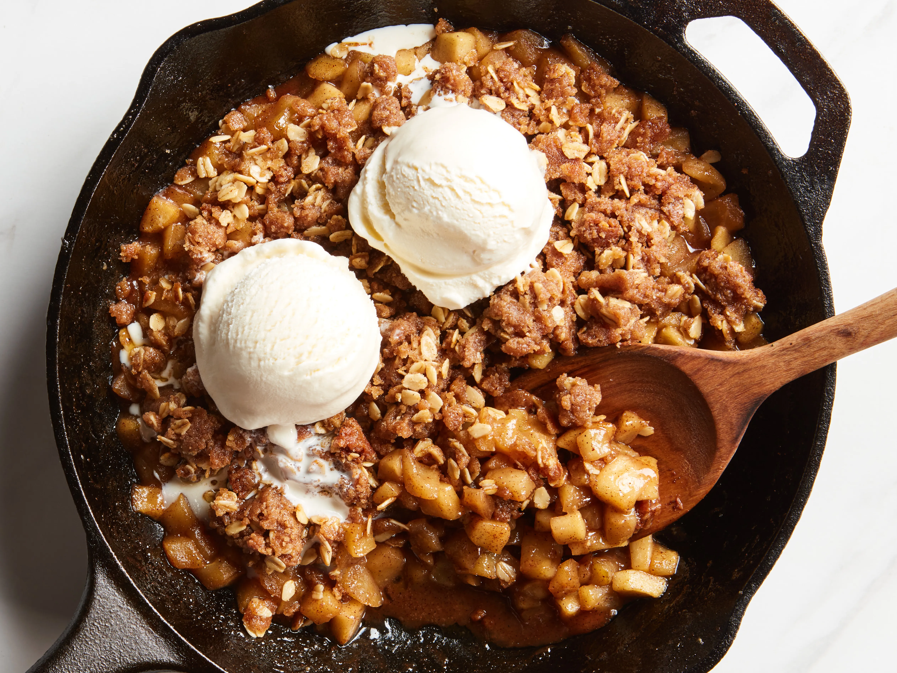

Apple crisp is a beloved American dessert which combines tender apples covered with a delectable crunchy topping. It is one of the common desserts that does not have the regular bottom crust and uses sliced or diced apples, generously doused in cinnamon and sugar, as the bottom layer.
Meal prep time : 1 hour
Servings : 6